História do Time
O Atlanta Hawks é uma franquia da NBA com origens que remontam a 1946, quando foi fundada como Buffalo
Bisons.
Pouco tempo depois, mudou-se para Moline, Illinois, e passou a se chamar Tri-Cities Blackhawks, sendo
uma das
equipes originais da NBL (National Basketball League).
Em 1951, tornou-se simplesmente "Hawks" e se mudou para Milwaukee, depois para St. Louis, onde viveu seu
período
mais vitorioso, incluindo o título da NBA em 1958. Desde 1968, está sediada em Atlanta, Geórgia,
mantendo-se
como uma presença constante na liga.
A história dos Hawks é marcada por grandes nomes como Bob Pettit, que foi o principal jogador da era St.
Louis,
e Dominique Wilkins, ícone dos anos 80, conhecido como "The Human Highlight Film". Nos anos 2000 e 2010,
a
franquia passou por fases de reconstrução e competitividade, destacando-se com jogadores como Joe
Johnson,
Al Horford e, mais recentemente, Trae Young.
A equipe manda seus jogos na State Farm Arena e é conhecida por ter uma torcida apaixonada e uma
história rica,
apesar de não ter muitos títulos. Os Hawks continuam sendo uma peça importante da cultura esportiva de
Atlanta
e da história da NBA.
Títulos e Conquistas
O Atlanta Hawks é uma das franquias mais antigas da NBA, com uma trajetória marcada por mudanças de
cidade,
altos e baixos e momentos históricos. Apesar de ter apenas um título da NBA, a equipe já revelou grandes
nomes
e tem uma base de fãs fiel.
Títulos da NBA
1 Campeonato da NBA:
Década de 1950: 1958 (como St. Louis Hawks, vencendo o Boston Celtics)
Títulos de Conferência (NBA Finals
Appearances)
4 vezes campeões de conferência:
1957, 1958, 1960, 1961 (todas como St. Louis Hawks)
Títulos de Divisão
12 títulos de divisão:
Destaques: 1968, 1970, 1980, 1987, 1994, 2015, 2021
Curiosidades
O Atlanta Hawks surgiu originalmente como Buffalo Bisons em 1946, mas mudou-se poucos
dias depois para Illinois, tornando-se os Tri-Cities Blackhawks. Foi uma das equipes
fundadoras da NBA moderna.
Mudanças de Cidade
A franquia jogou em várias cidades: Moline (IL), Milwaukee (WI), St. Louis (MO), e desde 1968 está em
Atlanta (GA).
Título Histórico em 1958
O único título da equipe foi conquistado como St. Louis Hawks, derrotando o Boston Celtics de Bill
Russell — uma das poucas derrotas do Celtics naquela era.
Dominique Wilkins
Um dos maiores jogadores da história dos Hawks, Wilkins encantou o mundo com suas enterradas
espetaculares. Foi 9 vezes All-Star e entrou para o Hall da Fama.
Harry the Hawk
O mascote oficial, Harry the Hawk, é um dos mais antigos e carismáticos da NBA. Ele interage com a
torcida e participa dos shows durante os intervalos.
Finais de Conferência em 2021
Em 2021, os Hawks surpreenderam ao chegar às finais do Leste, eliminando os Knicks e o Philadelphia
76ers, com grande desempenho de Trae Young.
Arena e Torcida
A State Farm Arena, no coração de Atlanta, é conhecida por seu ambiente vibrante e shows de
entretenimento nos intervalos.
Lendas da Franquia
Além de Wilkins, grandes nomes como Bob Pettit, Dikembe Mutombo, Lou Hudson e Joe Johnson marcaram época
com a camisa dos Hawks.
Elenco Atual
| Nome | Posição | Idade | Altura | Peso | Universidade | Salário |
|---|---|---|---|---|---|---|
| Jaylen Brown | SG | 28 | 1.98 m | 101 kg | Califórnia | $49,205,800 |
| Torrey Craig | SF | 34 | 1.96 m | 100 kg | South Carolina Upstate | $2,845,342 |
| Luka Garza | C | 26 | 2.08 m | 110 kg | Iowa | $2,162,606 |
| Hugo Gonzalez | G | 19 | 1.98 m | 92 kg | -- | -- |
| Sam Hauser | SF | 27 | 2.01 m | 98 kg | Virginia | $2,092,344 |
| Al Horford | #### | #### | #### | #### | #### | #### |
| Josh Minott | A | 22 | 2.03 m | 92 kg | Memphis | $2,019,699 |
| Miles Norris | A | 25 | 2.01 m | 99 kg | UC Santa Barbara | -- |
| Georges Niang | SF | 32 | 2.01 m | 104 kg | Iowa State | $8,500,000 |
| Payton Pritchard | PG | 27 | 1.85 m | 88 kg | Oregon | $6,696,429 |
| Neemias Queta | C | 26 | 2.13 m | 112 kg | Utah State | $2,162,606 |
| Baylor Scheierman | A | 24 | 1.98 m | 92 kg | Creighton | $2,494,320 |
| Max Shulga | G | 23 | 1.96 m | 95 kg | VCU | -- |
| Anfernee Simons | SG | 26 | 1.91 m | 90 kg | -- | $25,892,857 |
| Jayson Tatum | SF | 27 | 2.03 m | 95 kg | Duke | $34,848,340 |
| Xavier Tillman | A | 26 | 2.01 m | 111 kg | Michigan State | $2,237,691 |
| Jordan Walsh | G | 21 | 1.98 m | 92 kg | Arkansas | $1,891,857 |
| Derrick White | PG | 31 | 1.93 m | 86 kg | Colorado | $20,017,429 |
| Amari Williams | C | 23 | 2.13 m | 118 kg | Kentucky | -- |
Títulos e Conquistas
O Boston Celtics é uma das franquias mais vitoriosas da história da NBA. Seu legado é marcado por décadas
de conquistas, grandes jogadores e uma base de fãs apaixonada.
Títulos da NBA
17 Campeonatos da NBA:
Década de 1950: 1957
Década de 1960 (dominância histórica com 8 títulos consecutivos):
1959, 1960, 1961, 1962, 1963, 1964, 1965, 1966
Outros títulos:
1968, 1969, 1974, 1976, 1981, 1984, 1986, 2008
Os Celtics estão empatados com o Los Angeles Lakers como os maiores campeões da NBA (17 títulos cada até
2024).
Títulos de Conferência Leste (NBA Finals
Appearances)
22 vezes campeões da Conferência Leste:
Destaques: 1957 a 1966 (10 finais seguidas), 1981, 1984, 1985, 1986, 1987, 2008, 2010, 2022
Título de divisão (Atlantic Division)
33 títulos de divisão (maior marca da NBA):
Incluem as décadas de 1950, 1960, 1970, 1980 e anos recentes como 2008, 2010, 2011, 2012, 2017, 2022,
2024
Curiosidades
O nome Celtics foi escolhido em 1946 para homenagear a herança irlandesa de Boston, uma cidade com forte
influência da cultura celta.
O trevo (shamrock) no logotipo também é um símbolo típico da Irlanda.
Mascote Lucky the Leprechaun
O mascote oficial é o Lucky the Leprechaun, um duende irlandês que representa sorte, tradição e carisma
do time.
Ele aparece em jogos fazendo acrobacias e interagindo com a torcida.
Domínio Histórico
Entre 1959 e 1966, os Celtics venceram 8 campeonatos consecutivos — um feito inédito na NBA até hoje.
Liderados por Red Auerbach e Bill Russell, criaram uma verdadeira dinastia.
Primeiro Técnico Afro-Americano
Em 1966, Bill Russell se tornou o primeiro técnico negro da NBA, enquanto ainda atuava como jogador dos
Celtics. Um marco histórico no esporte americano.
Rivalidade com os Lakers
A rivalidade com o Los Angeles Lakers é a mais famosa da NBA. Já se enfrentaram em 12 finais, com os
Celtics levando vantagem na maioria.
A Mística do TD Garden
O ginásio atual, TD Garden, é considerado um dos mais difíceis para os adversários jogarem, pela
atmosfera intensa da torcida.
O antigo ginásio Boston Garden (1928–1995) era conhecido por seu piso de madeira "desnivelado", o que
ajudava os Celtics a manter vantagem em casa.
Lendas Eternas
Jogadores como Bill Russell, Larry Bird, Paul Pierce e Kevin Garnett fazem parte do Hall da Fama e são
ícones eternos da franquia.
O número 6 de Bill Russell foi aposentado por toda a NBA em 2022, após sua morte, como homenagem ao seu
legado dentro e fora das quadras.
 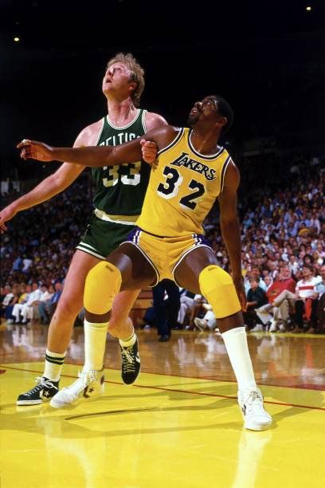
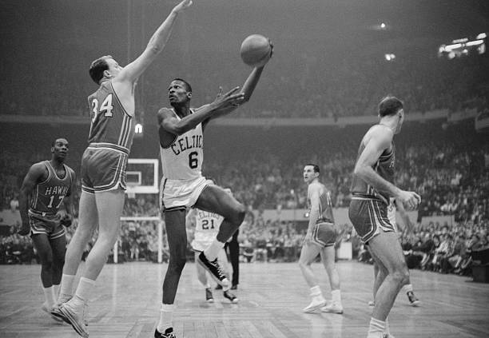
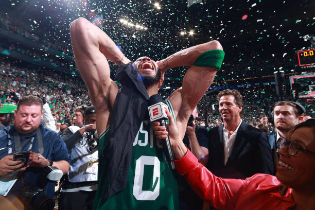
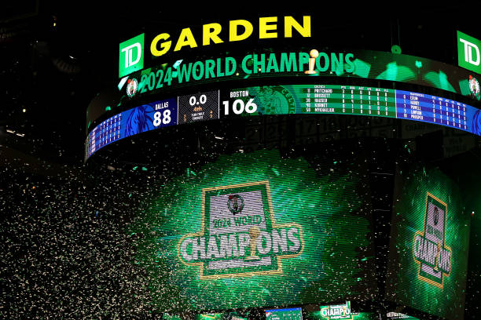
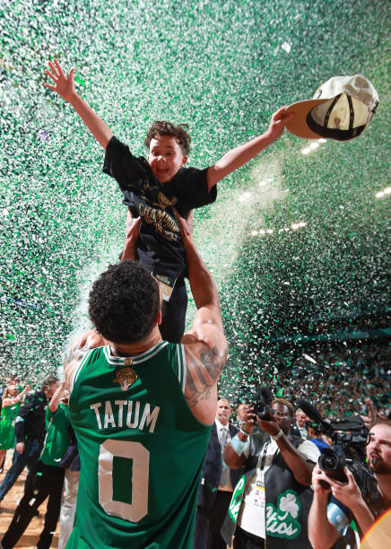
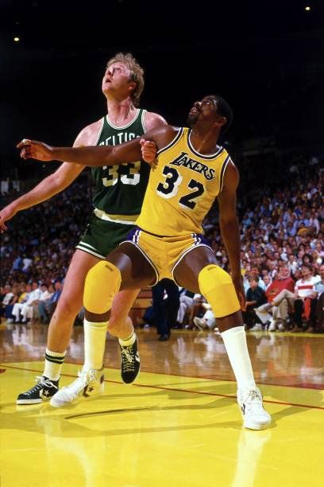
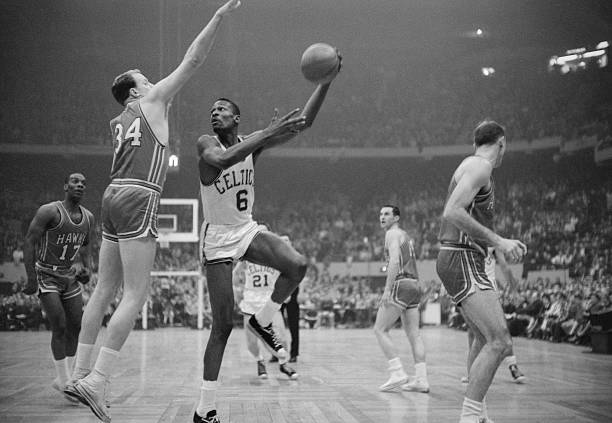
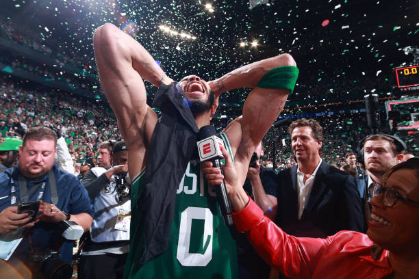
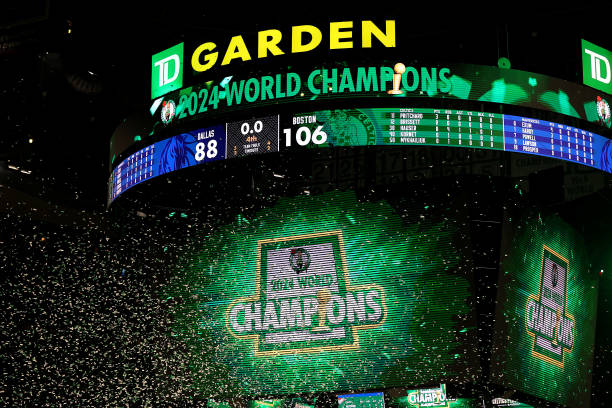
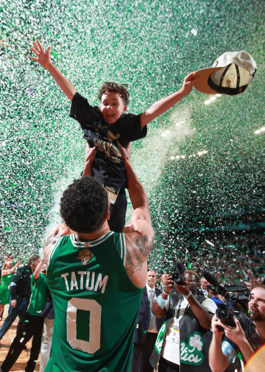

 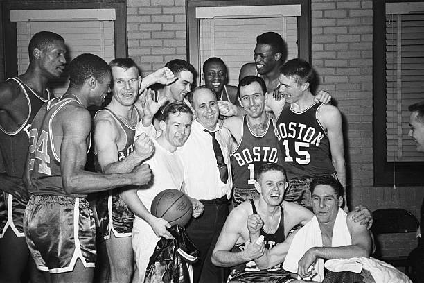
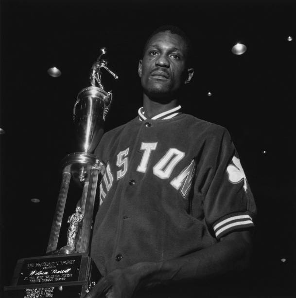
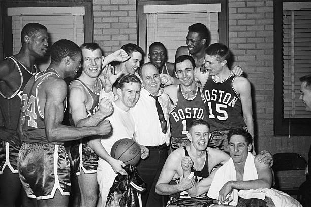
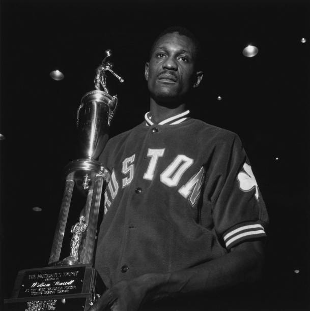
 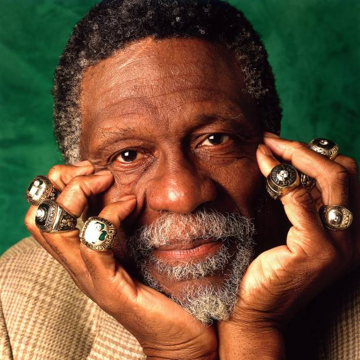
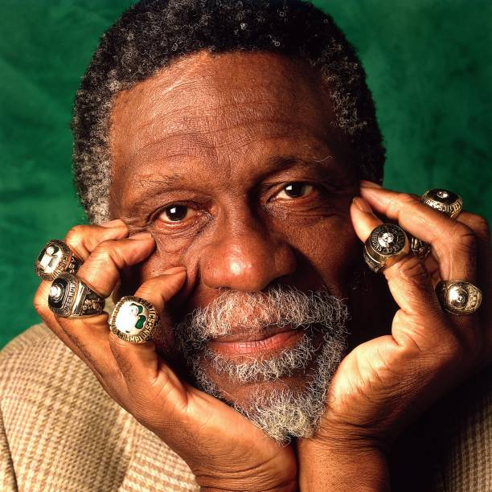